Lees hoofdstuk 1 en 2 om te begrijpen wat LEAP is en waarom het zo werkt. Hoofdstuk 4 is het praktische stappenplan om je cursus in te richten.
Een AI-leeromgeving die werkt met jóuw cursusmateriaal
LEAP-VU (Learning & Engagement AI-Platform) is een webapplicatie van de VU waarin studenten met AI-ondersteuning oefenen met de stof van jouw cursus. Het bijzondere: alles wat de AI zegt, is gegrond in het materiaal dat jij uploadt — je colleges, readers, slides en websites.
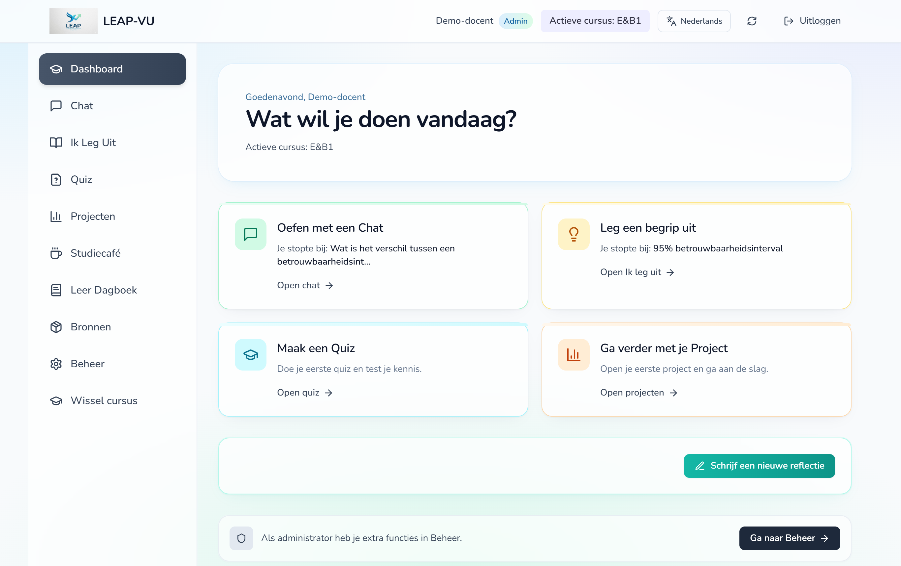
| Onderdeel | Wat de student doet |
|---|---|
| Chat | Stelt vragen aan een tutor die meedenkt en wedervragen stelt, in plaats van meteen het antwoord te geven. |
| Ik leg uit | Legt een begrip uit de cursus in eigen woorden uit en krijgt gerichte feedback: wat klopt, wat ontbreekt, welke misvatting speelt. |
| Quiz | Oefent met meerkeuze-, open en casusvragen over gekozen onderwerpen, met feedback en een volgende stap. |
| Projecten | Werkt in een groep aan een opdracht en voert gesprekken met persona's, zoals een opdrachtgever of een expert. |
| Studiecafé | Stelt vragen aan medestudenten, discussieert en laat AI-antwoorden door anderen controleren. |
| Leerdagboek | Kijkt terug op wat hij of zij heeft gedaan, met feedback en een volgende stap, en verzamelt achievements. |
Waarom LEAP werkt zoals het werkt
Generatieve AI kan een student in een paar seconden een antwoord geven. Dat is precies het risico: wie het antwoord krijgt, hoeft niet meer na te denken. LEAP is ontworpen om het omgekeerde te doen — AI inzetten om studenten meer te laten denken, en altijd binnen de stof die jij als docent hebt gekozen.
De AI zoekt eerst in je eigen materiaal en baseert haar antwoord daarop, met bronverwijzingen [1], [2] naar de passages. Staat iets niet in je materiaal, dan zegt ze dat eerlijk in plaats van te gokken. Zo leren studenten de stof zoals die in jóuw cursus wordt behandeld — met jouw terminologie en jouw nadruk.
De chat werkt Socratisch: de tutor stelt vaak eerst een wedervraag en bouwt voort op wat de student al weet. In Ik leg uit draait het om: de student legt uit, de AI luistert en geeft feedback. Uitleggen in eigen woorden is een van de krachtigste manieren om te leren, omdat je gaten in je eigen begrip zelf ontdekt. De quiz laat studenten kennis actief ophalen, wat beter beklijft dan herlezen.
Feedback werkt pas echt als een student weet wat goed ging, wat beter kan en wat de volgende stap is. LEAP geeft daarom steeds feedback én feed-forward: niet alleen een oordeel, maar een concrete vervolgstap, bij voorkeur met verwijzing naar je cursusmateriaal.
Studenten kiezen zelf hun leerniveau (van Nieuw tot Expert); LEAP past de diepgang van de uitleg daarop aan. De AI verandert dat niveau nooit uit zichzelf: een student kan vragen of hij klaar is voor een hoger niveau, krijgt een eerlijk oordeel, en besluit dan zelf. Het leerdagboek maakt het leerproces zichtbaar en nodigt uit tot terugkijken.
Een beloning motiveert als hij iets betekent. In LEAP verdient een student een achievement pas als de tutor, na een inhoudelijk gesprek, oordeelt dat hij een onderwerp op een hoger niveau beheerst — niet door op een knop te klikken. Autonomie (zelf kiezen), competentie (merken dat je groeit) en verbondenheid (samen in groepen en het studiecafé) zijn de drie bronnen van motivatie die LEAP bewust voedt.
In projecten werken studenten in groepen aan realistische vraagstukken. Een begeleider helpt de groep door de stappen van het project. Een beoordelaar geeft formatieve feedback op tussen- en eindproducten, met jouw rubric en een vast aantal rondes. Richt je het project in als simulatie, dan spreken studenten met rolspelers — een wethouder, een patiënt, een opdrachtgever — die reageren vanuit hun rol. Zet je bij een rolspeler de verstandhouding aan, dan merkt de groep dat zijn opstelling telt, zoals in de praktijk: wie een burgemeester uitscheldt, wordt niet meer ontvangen.
AI maakt fouten. LEAP leert studenten daar bewust mee omgaan: bronnen zijn zichtbaar, en met “Check de LLM” zet een student een AI-antwoord in het studiecafé, zodat medestudenten en docenten het kunnen controleren. Zo wordt kritisch lezen van AI-output een vaardigheid, geen bijzaak.
Jij bepaalt welk materiaal LEAP gebruikt en wat studenten wel of niet zien, hoe de chat klinkt, waar quizvragen vandaan komen en hoe streng de AI bij je bronnen blijft. Antwoordmodellen en tentamens die je als “Alleen voor docenten” markeert, bereiken studenten nooit — ook niet via de AI.
Het ontwerp sluit aan bij bekend onderwijsonderzoek, onder meer: het self-explanation-effect (Chi e.a., 1994) — Ik leg uit; het testing effect of retrieval practice (Roediger & Karpicke, 2006) — de quiz; het feedbackmodel met feed up, feed back en feed forward (Hattie & Timperley, 2007) — feedback en het leerdagboek; en de zelfdeterminatietheorie van Deci & Ryan (autonomie, competentie, verbondenheid) — niveaukeuze, achievements en samenwerken.
Zo ziet LEAP eruit voor een student in jouw cursus
De student stelt een vraag; de tutor zoekt in je materiaal en antwoordt, vaak met een wedervraag om de student zelf te laten nadenken. Onder de chat kiest de student zijn leerniveau en kan hij vragen of hij klaar is voor een hoger niveau. Een afgerond gesprek kan de student naar het leerdagboek verplaatsen; LEAP maakt er dan een reflectie van.
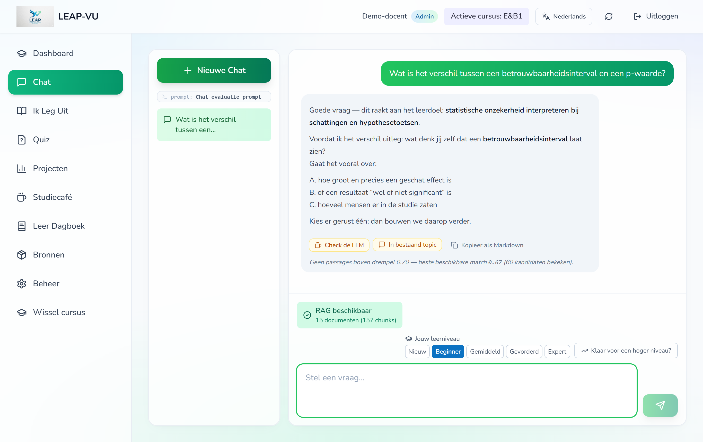
De student kiest een begrip uit je cursus en legt het in eigen woorden uit. LEAP vergelijkt de uitleg met je materiaal en geeft feedback in vaste delen: wat goed is, wat ontbreekt of onduidelijk is, en welke misvattingen gecorrigeerd moeten worden — met bronverwijzingen.
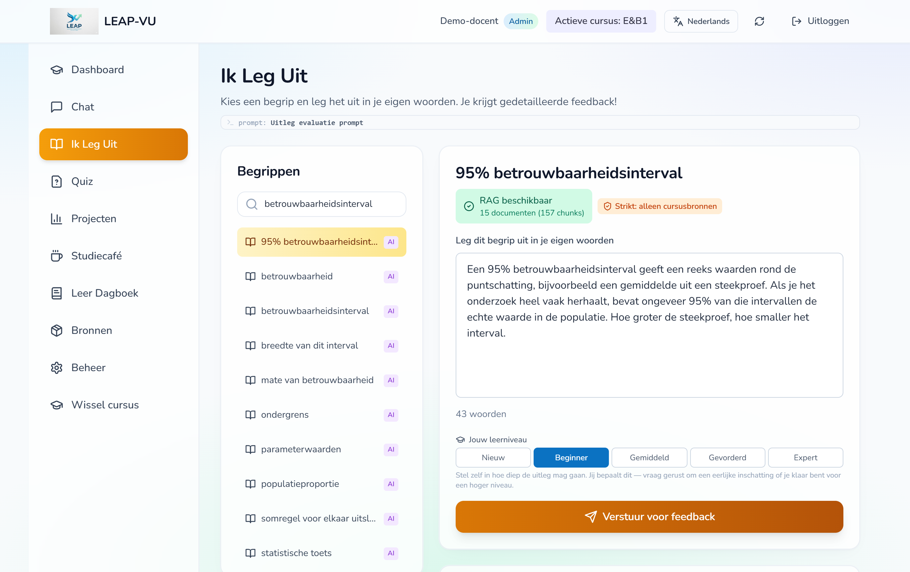
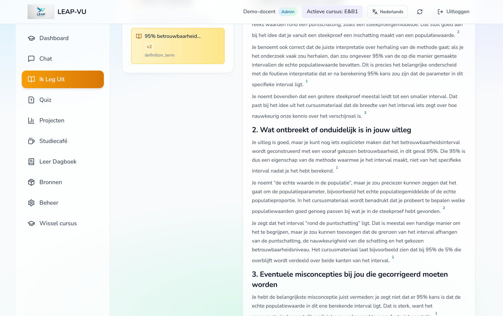
De student kiest een of meer onderwerpen, een vraagtype (meerkeuze, open vraag of casus) en een moeilijkheid. Bij meerkeuze ziet hij direct of het goed is; open antwoorden krijgen feedback, feed-forward en een score van 0–100. Een afgeronde quiz kan als reflectie in het leerdagboek.
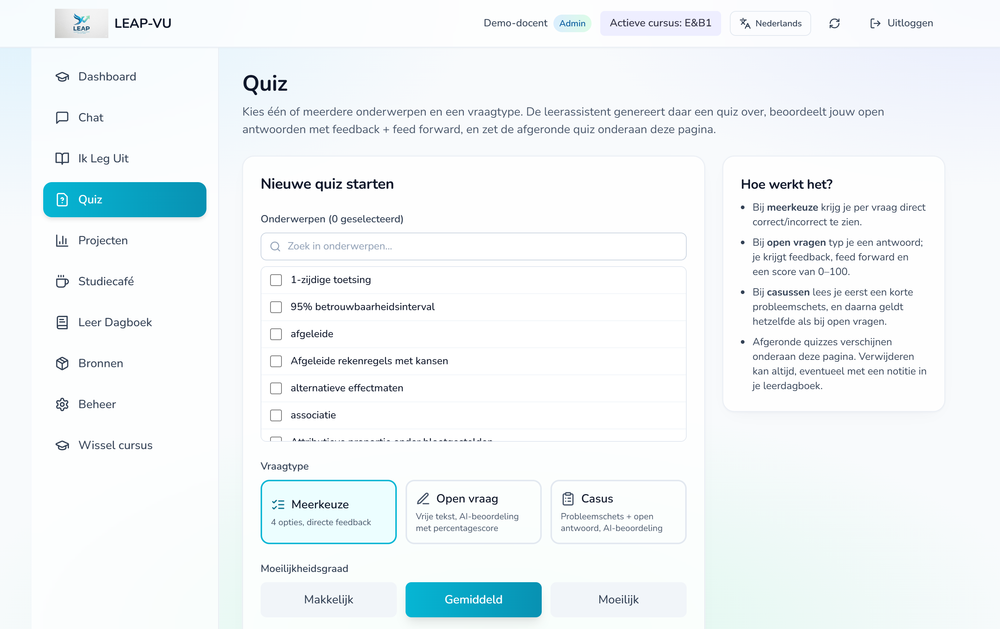
In de projectruimte werkt een groep aan een opdracht. De groep kiest een persona om mee te praten; elke persona heeft een eigen gezicht, rol en toon, en verwijst naar de stof. Hoe vaak een groep een persona mag raadplegen, stel jij in. Onder Feedback op jullie werk levert de groep een tussen- of eindproduct in bij een beoordelaar en krijgt meteen feedback en een volgende stap, eventueel met een medaille; de groep ziet hoeveel rondes er nog over zijn. Houdt een rolspeler een verstandhouding bij, dan ziet de groep het niveau (van koud tot warm) en de laatste aanleiding. Na afronding komen samenvattingen van de gesprekken in het leerdagboek van alle groepsleden.
Een forum per cursus, met de categorieën vraag, discussie, samenwerken en check-llm. Studenten reageren op elkaar, geven kudos en kunnen een stukje uit de chat of een quiz meesturen. Jij kunt aankondigingen plaatsen en berichten vastzetten of sluiten. Studenten krijgen desgewenst een e-mail bij reacties.
Hier komt alles samen. Na een chat, uitleg, quiz of project maakt LEAP een reflectie in drie blokken, met het leerniveau van dat moment erbij. Studenten kunnen ook eigen notities schrijven. In het tabblad Achievements staat de prijzenkast: verdiende medailles per onderwerp en niveau, en wat er nog te verdienen valt.
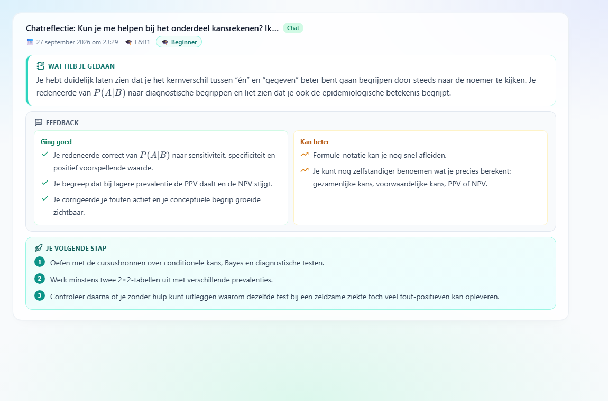
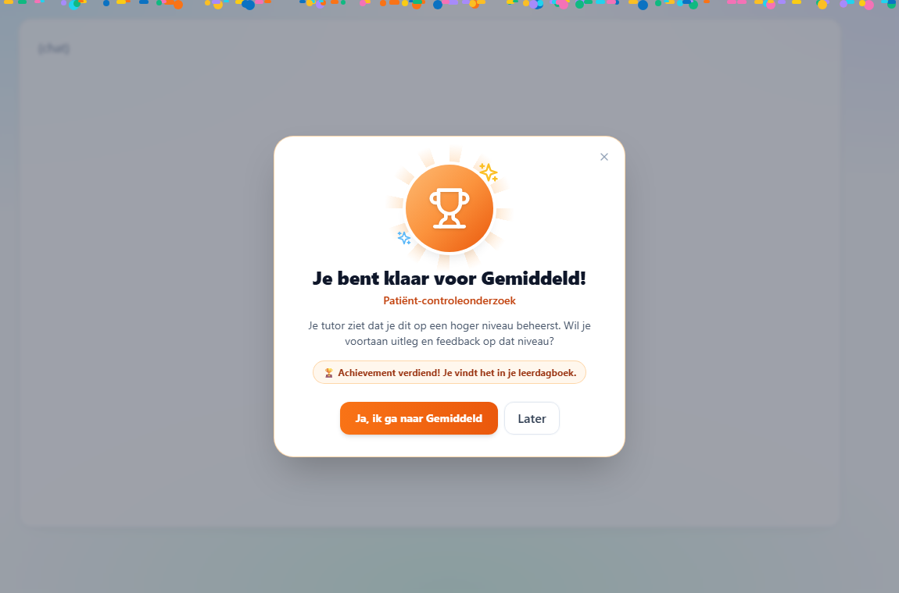
Van lege cursus tot “klaar voor studenten”
Je richt je cursus in via Beheer (linkermenu). Bovenaan staat altijd de actieve cursus; alles wat je doet, geldt voor die cursus. Twijfel je ergens over, klik dan op het vraagteken ⓘ naast een onderdeel voor een korte uitleg.
Via Beheer → Cursussen beheren maak je een cursus aan (naam en beschrijving). Per cursus zie je of hij actief en beschikbaar voor studenten is; met Beheer leden voeg je docenten en studenten toe. Minder gebruikte en ingrijpende acties, zoals een cursus verwijderen, staan onder ⋯ Meer.
Houd een nieuwe cursus op niet beschikbaar tot je stap 4 (“Klaar voor studenten”) hebt afgerond. Studenten zien de cursus dan nog niet.
In Beheer → Cursusmateriaal werk je vier stappen van links naar rechts af. In stap 1 upload je bestanden (pdf, docx, pptx, txt) of voeg je een website toe, zoals een online boek of je leeromgeving. Per bestand kies je een doel; LEAP doet een voorstel op basis van naam en inhoud.
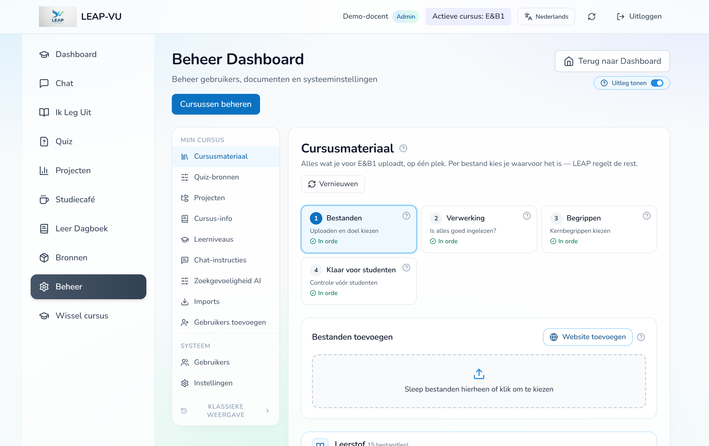
| Doel | Voorbeelden | Wat de AI ermee doet | Studenten |
|---|---|---|---|
| Leerstof | colleges, slides, reader, syllabus | chat, Ik leg uit, quiz en begrippen | ja |
| Cursusinformatie | studiehandleiding, rooster | alleen praktische vragen in de chat | ja |
| Projectmateriaal | opdracht, dataset, literatuur | projectbegeleiding door persona's | in het project |
| Alleen delen | formats, sjablonen | niets | downloaden via Bronnen |
| Alleen voor docenten | antwoordmodellen, tentamens | nooit | nooit |
LEAP leest je leerstof in en maakt er doorzoekbare fragmenten van. Hier zie je per bestand of dat gelukt is en uit hoeveel fragmenten het bestaat. Staat er een fout, verwerk het bestand dan opnieuw of upload een tekstversie.
LEAP leest je hele leerstof, document voor document, en haalt de kernbegrippen eruit. Elk begrip wordt gecontroleerd tegen je materiaal: alleen begrippen die daarin terug te vinden zijn, komen op de lijst. Studenten oefenen met deze begrippen in Ik leg uit en de quiz.
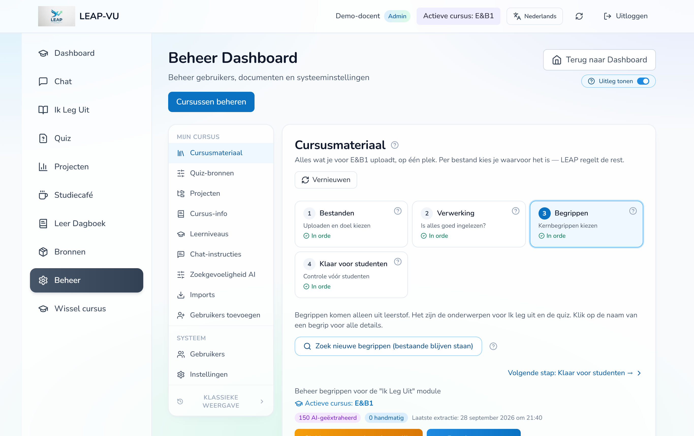
Neem bij voorstellen voor samenvoegen even de tijd: soms lijken twee begrippen op elkaar maar betekenen ze iets anders (bijvoorbeeld betrouwbaarheid van een meting en het betrouwbaarheidsniveau van een interval). Klik dan op Geen dubbeling; dat voorstel komt niet terug.
Een laatste controle: bijvoorbeeld begrippen zonder bron in je materiaal, of een antwoordmodel dat studenten nog kunnen zien. Je kunt hier ook een voorbeeldvraag maken zoals een student die krijgt. Is alles in orde, maak de cursus dan beschikbaar (stap 0).
In Beheer → Quiz-bronnen bepaal je waar de quizvragen vandaan komen:
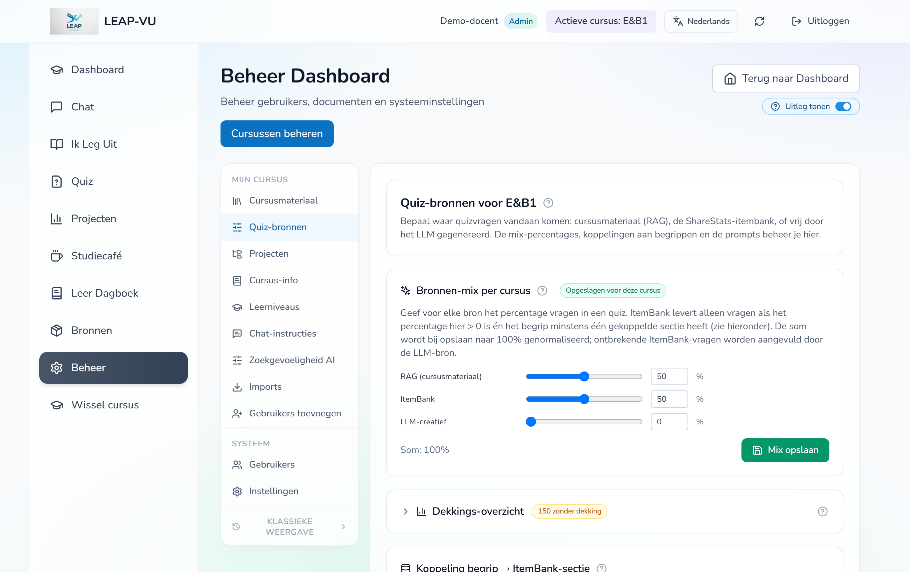
Een begrip krijgt alleen vraagbankvragen als je het koppelt aan een onderdeel van de vraagbank én het vraagbank-percentage hoger dan 0 is. Ontbreken er vraagbankvragen, dan vult de AI aan. Meer “cursusmateriaal” betekent vragen die dichter bij jouw stof liggen.
Chat-instructies zijn de vaste aanwijzingen die LEAP meekrijgt bij de chat en bij Ik leg uit: toon, aanpak en wat de AI wel of niet mag doen. Je kunt een cursus eigen instructies geven, bijvoorbeeld een vakspecifieke toon. Een wijziging geldt meteen voor alle studenten — wijzig met zorg.
Zoekgevoeligheid AI bepaalt hoe ruim LEAP passages uit je materiaal meeneemt: Ruim (meer passages, soms minder precies), Gebalanceerd (aanbevolen) of Streng (alleen passages die duidelijk over de vraag gaan). Met “Probeer met een begrip” zie je vooraf wat een instelling doet, zonder dat studenten er iets van merken.
In Beheer → Projecten maak je groepsopdrachten aan. Per project voeg je materiaal toe (met het oogje bepaal je of studenten het zien), stel je in of groepen iets mogen inleveren, en kies je de persona's.
| Rol | Waarvoor | Wat je instelt |
|---|---|---|
| Begeleider | Een companion die de groep door de stappen van het project helpt. Geen verstandhouding. | Instructie, eventueel een maximum aantal gesprekken. |
| Beoordelaar | Formatieve feedback op een tussen- of eindproduct dat de groep inlevert. Studenten chatten er niet mee. | Over welk product hij gaat, het aantal feedbackrondes per groep, en een verborgen rubric. |
| Rolspeler | Een personage in een simulatie, zoals een wethouder, patiënt of opdrachtgever. | Instructie, en desgewenst Verstandhouding met de groep bijhouden. |
Zet je de verstandhouding aan, dan vul je de gedragsregels in: wat maakt deze persona positiever en wat maakt hem negatiever, in gewone taal. Desgewenst beschrijf je ook hoe hij zich gedraagt op elk niveau (koud, gespannen, neutraal, welwillend, warm), en je kiest het startniveau.
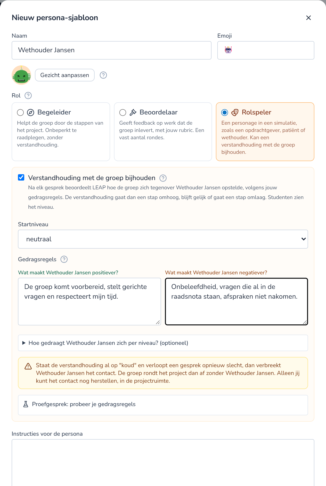
Bij Cursus-info zet je praktische informatie die de chat mag gebruiken voor vragen als “wanneer is de deadline?”. Bij Leerniveaus zie je welk niveau studenten zelf hebben gekozen. Je kunt dat alleen bekijken, niet wijzigen: de student blijft de baas over zijn niveau.
Kleine dingen die het werken prettiger maken
Langere taken — begrippen zoeken, bestanden uploaden, een website importeren of bijwerken, een vraagbank importeren — lopen door als je naar een ander deel van LEAP gaat. Rechtsonder zie je de voortgang; is een taak klaar, dan krijg je een seintje met een link naar het resultaat.
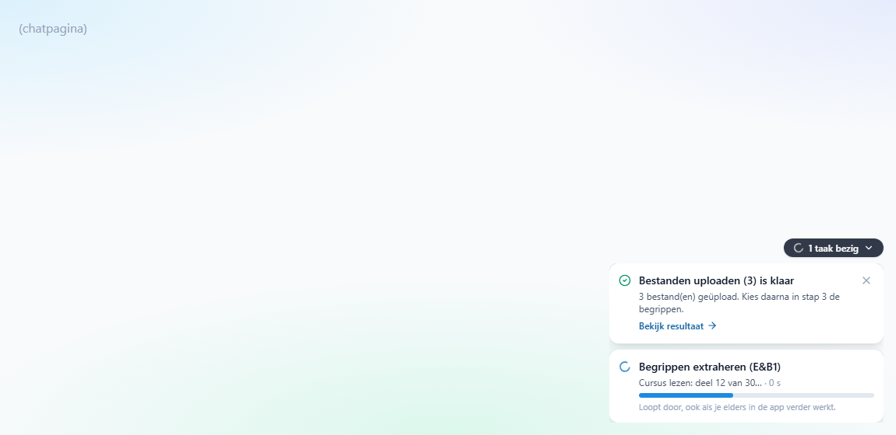
Begrippen zoeken gebeurt op de server en gaat zelfs door als je de pagina ververst. Uploaden en importeren doet je browser zelf: houd dan het tabblad open. LEAP waarschuwt als je het tabblad wilt sluiten.
Rechtsboven in Beheer staat de schakelaar Uitleg tonen. Staat hij aan, dan zie je bij elk onderdeel een vraagteken met een korte uitleg en tips. Ken je LEAP goed, zet hem dan uit voor een rustiger scherm; je keuze wordt onthouden.
LEAP is beschikbaar in twintig talen, waaronder Nederlands, Engels, Duits, Frans, Spaans, Chinees en Arabisch. Studenten kiezen rechtsboven hun taal; de AI antwoordt dan ook in die taal. Je hoeft je materiaal daarvoor niet te vertalen.
Vóór de start, en als iets anders gaat dan je verwacht
Kijk in stap 2 of het goed is ingelezen (aantal fragmenten). Een gescande pdf zonder tekstlaag kan LEAP niet lezen; upload dan een tekstversie. Is het document wel ingelezen, zoek dan nieuwe begrippen of verhoog het maximum aantal begrippen.
Klik bij Mogelijke dubbelingen op Zoek dubbelingen en kies Samenvoegen. De uitleg van studenten en quizkoppelingen verhuizen mee; de andere naam blijft bewaard.
Zet de zoekgevoeligheid op Streng of zet “alleen cursusbronnen” aan, en controleer met “Probeer met een begrip” of er voor die onderwerpen passages worden gevonden. Ontbreken ze, voeg dan materiaal toe.
Verhoog in Quiz-bronnen het aandeel RAG (cursusmateriaal), of koppel het begrip aan de map waarin de stof erover staat. Met het dekkingsoverzicht zie je waarom een begrip geen vraagbankvragen krijgt.
Nee, bewust niet. De student kiest zelf; jij kunt het bekijken bij Leerniveaus. Een student die wil weten of hij verder kan, vraagt dat in de chat via “Klaar voor een hoger niveau?”.
Dan is het contact verbroken: de groep kwam op het dieptepunt van de verstandhouding. In een simulatie is dat een bewuste consequentie. Wil je de groep toch een nieuwe kans geven, open dan de projectruimte van die groep en kies bij Verstandhoudingen per persona op Corrigeer een ander niveau, met een korte motivatie.
Geef je cursus eigen chat-instructies (Beheer → Chat-instructies). Test de wijziging direct zelf in de chat, want hij geldt meteen voor al je studenten.
LEAP wordt steeds verder ontwikkeld, mede op basis van ervaringen van docenten en studenten. Neem bij vragen, problemen of ideeën contact op met het LEAP-team van de VU.